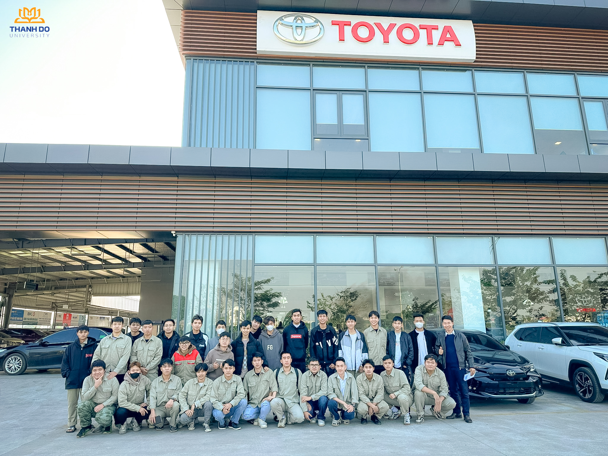

Công nghệ Kỹ thuật Ô tô
Tổng quan
Ngành Công nghệ Kỹ thuật Ô tô – Trường Đại học Thành Đô đào tạo kỹ sư theo định hướng ứng dụng, sẵn sàng làm việc trong kỷ nguyên ô tô điện, ô tô thông minh và giao thông bền vững. Chương trình trang bị kiến thức cốt lõi về cơ khí, điện, điện tử, điều khiển tự động và công nghệ số, kết hợp đào tạo thực hành chuyên sâu, thực tập doanh nghiệp và tiếp cận công nghệ ô tô hiện đại. Sinh viên tốt nghiệp có năng lực nghề nghiệp vững vàng, tư duy đổi mới và khả năng hội nhập thị trường lao động trong nước và quốc tế.
- Mã ngành: 7510205
- Định hướng đào tạo: Công nghệ kỹ thuật ô tô, Công nghệ ô tô số
- Thời gian đào tạo: Tùy thuộc vào đối tượng đầu vào (Trung cấp, Cao đẳng, Đại học)
- Trình độ đào tạo: Kỹ sư
- Học phí: 370.000 đồng/1 tín chỉ
Chương trình đào tạo
Tổng số tín chỉ của chương trình đào tạo (Chưa tính các học phần Giáo dục thể chất, Giáo dục Quốc phòng – An ninh, tiếng Anh chuẩn đầu ra): 150 tín chỉ
- Kiến thức giáo dục đại cương: 41 tín chỉ
- Kiến thức giáo dục chuyên nghiệp: 84 tín chỉ
- Học kỳ doanh nghiệp: 18 tín chỉ
- Đồ án tốt nghiệp/Các học phần thay thế ĐATN: 7 tín chỉ
Bản mô tả chi tiết chương trình đào tạo: Xem tại đây
Triển vọng nghề nghiệp
Ngày 14/7/2014 Thủ Tướng Chính phủ đã phê duyệt Quyết định số 1168/QĐ-TTg về “Chiến lược phát triển ngành Công nghiệp Ô tô Việt Nam đến năm 2025 và tầm nhìn đến năm 2035” và khẳng định:
- Công nghiệp ô tô là ngành tạo động lực quan trọng thúc đẩy sự nghiệp công nghiệp hóa – hiện đại hóa, cần được khuyến khích phát triển bằng những chính sách ổn định, nhất quán và dài hạn.
- Phát triển ngành công nghiệp ô tô trên cơ sở phát huy tiềm năng của doanh nghiệp thuộc mọi thành phần kinh tế nhằm đáp ứng từng bước nhu cầu trong nước và nhu cầu an ninh, quốc phòng của đất nước.
- Đến năm 2035: Ngành công nghiệp ô tô bảo đảm hiệu quả tổng thể về kinh tế – xã hội cũng như các yêu cầu về môi trường và xu hướng sử dụng năng lượng tiết kiệm, đáp ứng nhu cầu trong nước và tham gia vào chuỗi sản xuất, chế tạo ô tô thế giới, có giá trị xuất khẩu lớn.
- Như vậy vai trò của ngành Công nghệ Kỹ thuật Ô tô được coi là ngành trọng điểm trong đào tạo nguồn nhân lực chất lượng cao cho xã hội, phù hợp và đáp ứng cao với sự nghiệp công nghiệp hóa – hiện đại hóa mà Đảng và Nhà nước đang quyết tâm thực hiện.
Vị trí việc làm của sinh viên ngành CNKT Ô tô tại TDD:
- Phụ trách vận hành, giám sát sản xuất, lắp ráp
- Giám sát viên về bảo dưỡng, dịch vụ ô tô;
- Kiểm định viên tại trạm đăng kiểm xe cơ giới
- Kinh doanh ô tô, dịch vụ ô tô
